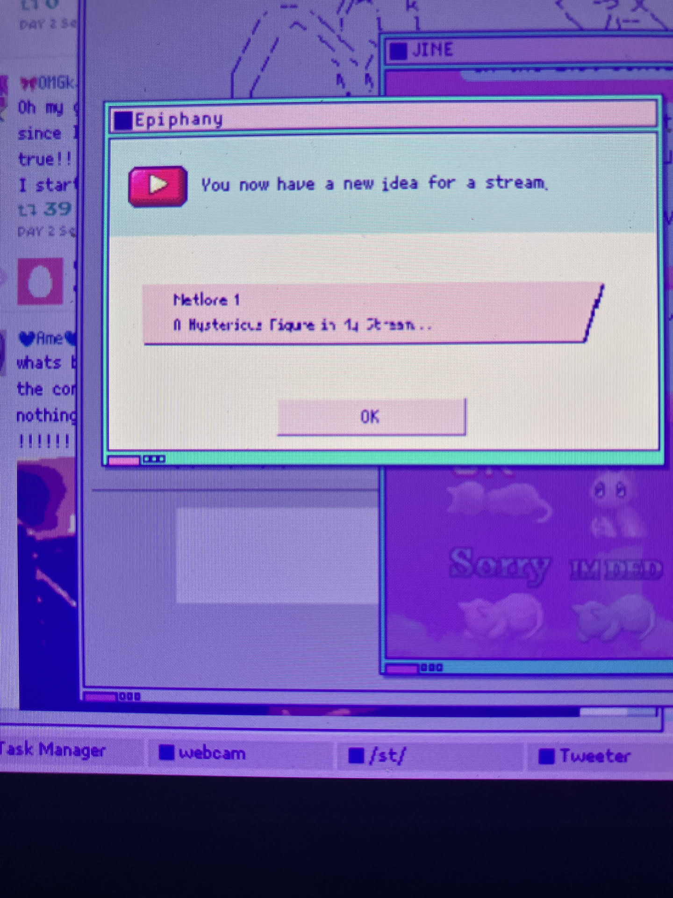

1game1week - Week 1 (1/10/26) - NEEDY STREAMER OVERLOAD
Hey all! Here we go again! (1/1 -> 12/8) Well... I'm quite a bit late, but we're back to business as usual. Hope that everyone's holidays were great! Once again, Happy New Year! I'm implementing a few new rules to both allowing myself to purchase games and for 1g1w overall. I'll have to finalize the verbiage at some point, but it'll be interesting to see how well I can hold myself to them. 10 days after the year started I haven't broken any, so... 2.7% of the way there? Hopefully, this will be the year of the backlog. I'm really excited to see some change for myself. Hopefully I can actually make posts on time as well! Do any of you have any resolutions for this year? How many have already quit the gym? Quit drinking soda? I'm only joking. Do your best to achieve your goals!New games from 1/1 -> 1/7: None! (Total 1)
As of 1/8, my yearly backlog is at -2 (lower is better, since it's the beginning of the year it resets to 0). And onto 1g1w. A game is considered "beaten" if I've accomplished the main objective of the game, regardless of how many routes / endings I've achieved. However, it's preferable to get all endings if possible! GAME: NEEDY STREAMER OVERLOAD PLATFORM: Switch GENRE: Adventure STARTED ON: 1/1 BEATEN ON: 1/1 (but got all endings 1/6) TOTAL PLAYTIME: 8 hours and 46 minutes I have a lot of feelings about this game, but most of them are mixed. That's a good thing. I've been putting off this post because I've been trying my best to organize my thoughts (and mostly failing) It's a huge criticism piece of the state of the internet, as well as the real-life impact it has on the mental health of its users and the expectations behind internet idols / streamers / vtubers (although KAngel herself is not a Vtuber.) I'm not going to pretend I know much about the latter two. While I could probably hold a conversation about them, it'd probably be surface-level and not backed by much other than personal experience or observation of streamers. Personally, I've simply stopped using social media overall (other than Facebook, but I really want to get rid of that too, damn you Marketplace) due to its impact On my mental health and habits. I guess it ties in with the state of the internet. Take Twitter, for example, the largest social media platform in the entire internet and current cesspool filled with people getting paid for engagement farming- best done by making posts explicitly designed to make people angry. Actually, scratch that. Why even make those posts yourself? Just get an AI to do it in your stead. You can have fully automated engagement farms just making you advertising money by making people angry, keeping them on the platform. Hell, it's even worse. It's insane that Twitter's built-in AI can be used, natively, to disgrace and humilliate women. So what, though? Even though everyone knows this is happening- even though the Dead Internet Theory is seriously a consideration- even though there are various alternative sites (which, to be fair, aren't all much better, but at least aren't Twitter)- we continue using Twitter. Good or bad, we continue to drink the poison. Why? Does it really have that much hold on us? Is it because major media platforms has shifted to the distribution of news via Twitter? Are we afraid we'll miss out on the next silly trend after six seven? Is that really worth it? Parasocial relationships are cancerous and the internet has warped our ability to conceive people as people rather than just pixels on a screen. Social media destroyed us as a species because we simply are rewarded for being mean. There is no incentive to be good online. I've wanted to quit the internet for a long time. But it's annoying. I have so many close friends online that I wouldn't want to part ways with just because the internet is bad. The internet is likewise so intrinsically tied to our daily lives that going without it is weird. Things that used to be handled in person are now exclusively handled via an app. Not having a smartphone is a struggle. It's even stranger, since I was one of the last generations to remember what a pre-social media takeover world was like. I wonder what it's like for people younger than me, not being able to remember a world without it. Back then, this unc remembers the internet was a place you had to go to the family computer to explore. It didn't follow you around, and it wasn't invasive to your real-life. Often, I lament that the world I grew up in, physically, no longer exists. It's a world completely foreign to me. Weirdly, I never thought the same about the internet. It might have been so gradual I never really noticed it, but the internet I grew up with is gone. These are part of the reason why I continue these posts, this site. It's my own little space in the internet so I can place my own thoughts. I think it's important for me. A little corner of the internet that's safe from all those things, and just focus on the fun games I play and my day-to-day life. As a game, it's actually really entertaining. You're tasked, as the titular needy streamer, Ame's, partner to fully manage her life. When to sleep, when to play games, when to take medicine, when to stream, where to go, etc. The goal is essentially to keep her healthy (or at least alive) and to make her alter ego, KAngel, succeed as a streamer by achieving one million subscribers. It's a simple yet addictive management sim with various endings, which are decided by three things you'll balance throughout the game: Ame's stress, affection for P-chan (aka the player), and her mental darkness. It presents itself in a very cutesy way with beautiful pixel art (more on that a little later, however) with a phenomenal soundtrack I have not been able to get out of my head. Its strength is its storytelling, however. Its references to bishoujo games are really sweet to see. A little concerning for me that I understood a few of them but... well I'm not too surprised at this point. A minor but incredibly annoying thing in this game was that the Switch port used awkward scaling for 720p, which is the handheld mode, so some fonts appeared wrong in handheld mode. This wouldn't be an issue if there was a Switch 2 binary, but since it's through backwards compatibility, the Switch 1 handheld profile is used where it's 720p. This is later scaled to 1080p for the Switch 2 screen, leading to it looking a little bit screwed up. 
 This happened with a little of the art (I particularly remember it in the Rainbow Girl ending as KAngel was approaching the screen). I'm not sure whether this was due to handheld scaling or the art being this way, but I doubt it's the latter.
Controls were a little bit awkward as well, since it's just supposed to be a mouse pointer. It would occasionally be really frustrating to move with slow cursor speed.
Also, I'm decently sure that the game is supposed to show you the results of the action you're about to take on PC when you "hover" over it. For example, if you're going to stream: you hover over the "Stream" button, and it'll show a box showing Ame's stress going up, as well as her channel's expected growth.
However, to actually show this on Switch, you have to do half an A press to check. If that's not enough, if the preview isn't what you want or want to check something else, you can't just let go of the A button- that would count as a confirmation / full A press.
Instead, you'll have to drag your cursor outside of the confirmation box, which is quite some more effort over just hovering over something. I haven't played the PC version personally, but from glancing at a YouTube video this seems to be the case, so...
I mentioned a Switch 2 binary earlier. It would be really neat to have one to pair with JoyCon 2 mouse controls. Pretty simple as well, I would hope!
Complaints about visuals and controls aside- as I mentioned, while this game is really fun as a management sim, its true strength is its ability to weave a story and create an environment where the player / reader is incentivized to call their relationship with the internet into question- or, at least in my case, reaffirm that we're probably too far gone.
Thanks for reading! If you need to contact me for any reason, please feel free to email me at aru@hoshikawa-aru.com.
This happened with a little of the art (I particularly remember it in the Rainbow Girl ending as KAngel was approaching the screen). I'm not sure whether this was due to handheld scaling or the art being this way, but I doubt it's the latter.
Controls were a little bit awkward as well, since it's just supposed to be a mouse pointer. It would occasionally be really frustrating to move with slow cursor speed.
Also, I'm decently sure that the game is supposed to show you the results of the action you're about to take on PC when you "hover" over it. For example, if you're going to stream: you hover over the "Stream" button, and it'll show a box showing Ame's stress going up, as well as her channel's expected growth.
However, to actually show this on Switch, you have to do half an A press to check. If that's not enough, if the preview isn't what you want or want to check something else, you can't just let go of the A button- that would count as a confirmation / full A press.
Instead, you'll have to drag your cursor outside of the confirmation box, which is quite some more effort over just hovering over something. I haven't played the PC version personally, but from glancing at a YouTube video this seems to be the case, so...
I mentioned a Switch 2 binary earlier. It would be really neat to have one to pair with JoyCon 2 mouse controls. Pretty simple as well, I would hope!
Complaints about visuals and controls aside- as I mentioned, while this game is really fun as a management sim, its true strength is its ability to weave a story and create an environment where the player / reader is incentivized to call their relationship with the internet into question- or, at least in my case, reaffirm that we're probably too far gone.
Thanks for reading! If you need to contact me for any reason, please feel free to email me at aru@hoshikawa-aru.com.